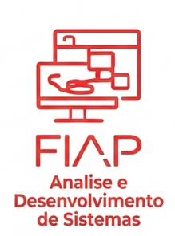

A Análise e Desenvolvimento de Sistemas é voltada para a criação de soluções tecnológicas que atendam às necessidades de empresas e usuários. O profissional dessa área atua desde o levantamento de requisitos até a implementação de softwares.
O processo começa com a análise das demandas, identificando problemas e propondo soluções digitais. Essa etapa é crucial para garantir que o sistema seja funcional e realmente útil.
Na fase de desenvolvimento, entram em cena linguagens de programação, bancos de dados e frameworks. O programador precisa dominar essas ferramentas para construir aplicações robustas e seguras.
Outro ponto relevante é a manutenção e atualização dos sistemas. A tecnologia evolui rapidamente, e os softwares precisam acompanhar essas mudanças para não se tornarem obsoletos.
Por fim, o campo oferece grande empregabilidade, já que empresas de todos os setores dependem de sistemas informatizados. Isso torna a carreira promissora e dinâmica.
Modelar sistemas com UML, XP e Scrum.
Construir aplicações web, mobile e distribuídas com Design Thinking.
Usar HTML5, CSS3, JavaScript, React e NextJS.
Integrar bancos de dados SQL, Big Data e Analytics.
Criar aplicações com frameworks Java e .NET, além de soluções para IoT e Smart Cities.
|Curso anterior| |Página principal| |Próximo curso|